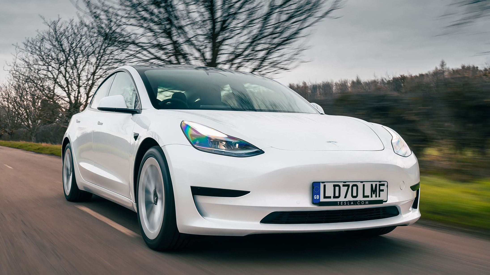
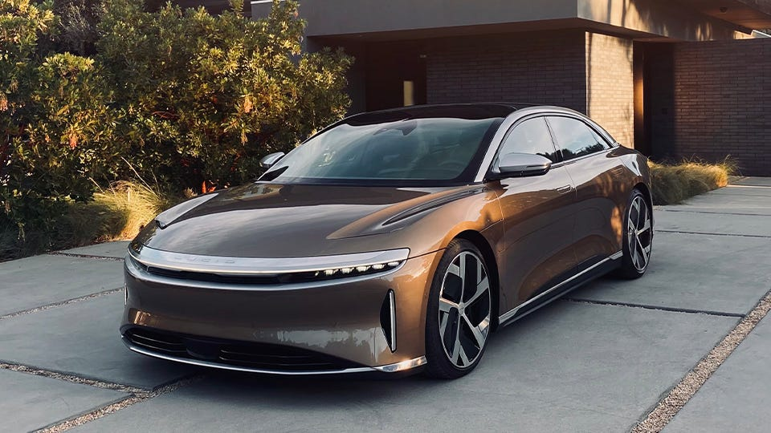
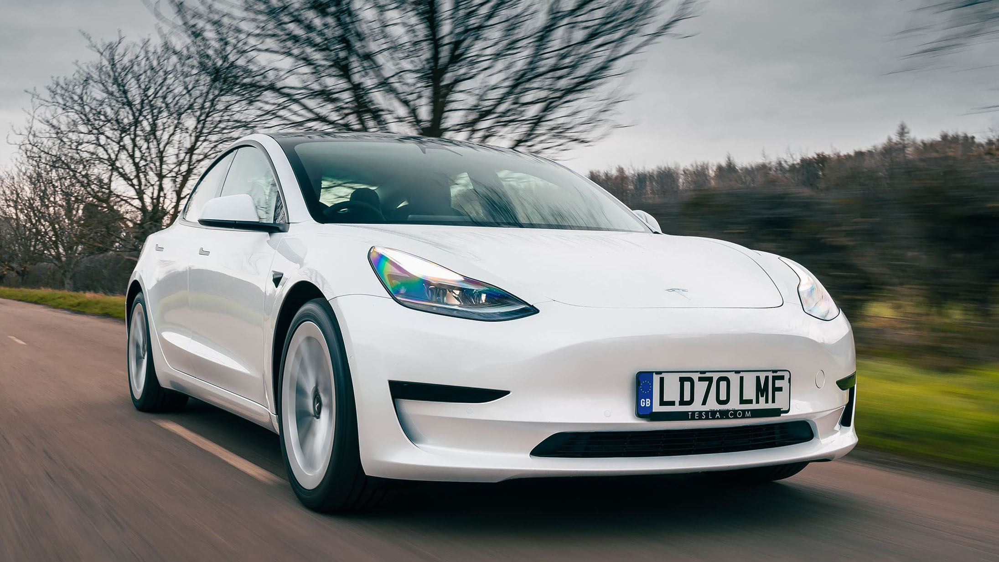
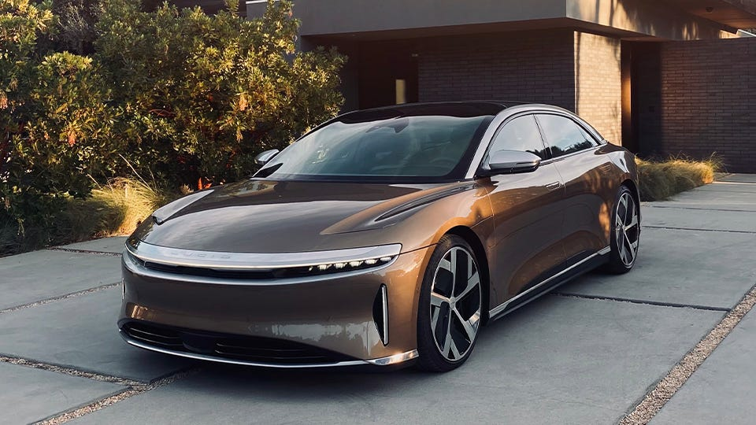

Elektromos autók
 



Bevezető
Az elektromos autók az utóbbi években egyre nagyobb figyelmet kaptak az autóiparban. Az elektromos autók az általuk használt elektromos motorral működnek, amelyet egy vagy több akkumulátor táplál. Az elektromos autók használata előnyökkel és hátrányokkal jár, amelyeket érdemes figyelembe venni, ha ezt a járműfajt szeretnénk választani.
Az elektromos autók általában magasabb árkategóriába tartoznak, mint a hagyományos autók, azonban az árak folyamatosan csökkennek, ahogy a technológia fejlődik és a gyártási folyamatok hatékonyabbá válnak. Az elektromos autók általában könnyűsúlyúak, ami javítja a hatékonyságukat és megnöveli az általuk megtett távolságot egy töltéssel.
Ismertebb modell
- Tesla Model S
- Tesla Model 3
- Tesla Model X
- Tesla Model Y
- Chevrolet Bolt EV
- BMW i3
Legolcsóbb elektromos autók
- Renault Zoe: Az egyik legolcsóbb elektromos autó a piacon, ára körülbelül 25.000-30.000 euró.
- Nissan Leaf: A Nissan Leaf 30 kWh-s változata ára körülbelül 30.000-35.000 euró.
- Volkswagen e-Up!: Az e-Up! ára körülbelül 22.000-25.000 euró.
- Smart EQ ForTwo: Az egyik legkisebb elektromos autó a piacon, ára körülbelül 20.000-25.000 euró.
- Hyundai Ioniq Electric: Ára körülbelül 35.000-40.000 euró.
Összehasonlító táblázat
| Kibocsátás típusa | Elektromos autó | Belső égésű motoros autó |
|---|---|---|
| Szén-dioxid (CO2) | 0 g/km | 129 g/km (az EU-ban újonnan forgalomba helyezett autók átlaga) |
| Nitrogén-oxidok (NOx) | 0 g/km | 0,041 g/km (dízelautók) vagy 0,026 g/km (benzinmotoros autók) |
| Részecskeszennyezés (PM) | 0 g/km | 0,00004 g/km (benzinmotoros autók) vagy 0,00017 g/km (dízelautók) |
| Kén-dioxid (SO2) | 0 g/km | 0,00016 g/km (benzinmotoros autók) vagy 0,0003 g/km (dízelautók) |